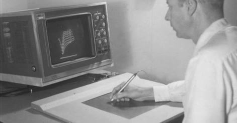

An Active Essay Revisiting the GRAIL Handwriting Recognizer
Jack Schaedler, 2016

Fifty years ago, RAND corporation developed the Graphical Input Language software system (GRAIL). In a RAND memorandum from 1966, the stated objective of GRAIL was to, “Investigate methods by which a user may deal directly, naturally, and easily with [their] problem.” Users communicated with GRAIL using a pen-like instrument and tablet. GRAIL had no mouse, no keyboard, no buttons, no joystick, and none of the other paraphernalia that we generally associate with modern computing. When the user wanted a box on the screen, they drew the box. When the user wanted text on the screen, they handprinted the text. When you watch a demo of the system today, it still feels elegant and magical. To steal a line from Tony Hoare, GRAIL is in many ways an improvement on nearly all of its successors.
“This recognition scheme meets its primary objective of enabling any user to communicate naturally with a computer. A user is not distracted by any operational mechanics but, rather, may concentrate on [their] problem.”
- Gabriel Groner (1966)
The image above depicts Tom Ellis using the RAND tablet to interact with an onscreen image sometime in the 1960s. Ellis was one of the inventors and project leads for the RAND tablet and GRAIL software system.
This, and many other images can be found online at the Computer History Museum.
In this active essay, we will revisit Gabriel Groner’s contribution to the GRAIL project. Groner developed a wonderfully clever program which recognized handprinted letters, numbers, punctuation marks, and geometric figures. The program was efficient enough to run in real-time on a IBM System/360 computer, and robust enough to properly identify 90 percent of the symbols drawn by first-time users. Groner documented his method in a 1966 RAND memorandum on the Real-Time Recognition of Handprinted Text.
By the end of this essay, you should understand exactly how Groner’s handwriting recognition scheme works. More precisely, you will see how Groner’s method works, and develop an intuitive understanding of its various operations and phases. It’s best if you read this essay as a dynamic companion to Groner’s original memorandum. When Groner describes an algorithm or heuristic, this essay will provide you with an interactive implementation that you can explore. When text is taken verbatim from Groner’s memo, it will be rendered in an alternative font. The recognition scheme described in the original memorandum was capable of recognizing a wide variety of symbols, shapes, numbers, letters, and even punctuation marks. In this essay, I will present a simple version of Groner’s recognizer that can only identify uppercase numbers and letters.
All of the source code for this essay is publicly available on Github. Please submit all bugs, typos, and suggestions to the issue tracker. Feel free to contact me on Twitter if you have any questions or comments about this piece.
In fact, you can read the source code for Groner’s entire program, which he wrote in IBM 360 Assembly.
The RAND Tablet
“Present-day user-computer interface mechanisms provide far from optimum communication, considerably reducing the probability that full advantage is being taken of the capabilities of either the machine or of the user... It was felt that exploration of man’s existent dexterity with a free, pen-like instrument on a horizontal surface, like a pad of paper, would be fruitful.”
- M.R Davis and T.O. Ellis (1964)
Humans interacted with GRAIL using a RAND tablet. All input to the system was drawn onto the surface of RAND tablet using a pen-like instrument. The 10.24" × 10.24" tablet had a resolution of 100 lines per inch, making it capable of accurately digitizing more than one million discrete pen positions. A pressure sensitive switch was installed in the tip of the pen, allowing the user to press the pen against the writing surface whenever they wished to make a mark on the screen. The position of the stylus was reported to GRAIL every four milliseconds as a pair of (x, y) coordinates.
Below, you will find a virtual tablet on which you can draw and scribble. Like the RAND tablet, this virtual tablet’s surface is discretized. This means that the writing surface is divided into a grid, and all pen positions are reported as coordinates on this grid. While the RAND tablet had a resolution of 100 lines per inch, our virtual tablet has a considerably lower resolution of around 20 lines per inch. Therefore, it is best to imagine our virtual tablet as a small portion of a RAND tablet scaled up by about 500%. Keep this in mind when writing on the tablet. Draw letters and numbers so that they fill up around 70% of the available tablet height. Draw big!
To begin drawing, move your pointer over the tablet and press the mouse button. This simulates the act of pressing the stylus against the surface of the tablet. Without releasing the mouse button, move your pointer across the tablet surface to make a mark. When you’re happy with your mark, release the mouse button. Try to get a feel for working on the tablet by drawing a few numbers (2, 3, 6) and letters (C, M, S) that can be completed without lifting the pen from the surface of the tablet. Once you feel comfortable scribbling and drawing on the virtual tablet, scroll onwards to the next section.
“A user communicates with the computer via a RAND tablet in conjunction with a cathode ray tube (CRT) display. The tablet hardware consists of a horizontal 10" square writing surface and pen-like writing instrument...
When he presses the pen against the tablet writing surface, a switch in the pen closes, thereby notifying the central processing unit (CPU) of a "pen-down action"...
When the pen is lifted, the pen-switch is opened, thereby notifying the CPU of a "pen-up" action... As the pen is moved across the writing surface, the recognition scheme is notified of its position every 4 msec.”
This was some seriously cool technology for 1963. You can read RAND’s memorandum on the particulars of the design and implementation here.
If you’re interested in more anecdotal information about the RAND tablet, watch this video of Alan Kay discussing the Rand tablet.
I’m using some less than optimal terminology here because I have no idea what sort of device you might be using to read this essay. I’m fairly certain that - if they aren‘t already - terms like mouse and click will soon feel as anachronistic as a carriage return. That means that you’ll have to do some on-the-fly translation if you happen to be using something mouse-less like a trackpad, touchscreen, or tablet.
Smoothing
You might have noticed that the marks you make on the tablet will appear with ugly little perturbations and jaggies when they are displayed on the screen. This occurs because the tablet can only report pen positions which lie on a discrete grid. This means that even smoothly drawn curves will inevitably include little bumps and corners after being captured by the tablet. These jaggies look ugly, but more importantly, they add unwanted noise to the list of pen positions. In order to remove this noise, Groner decided to smooth the tablet’s output.
"The scheme smoothes the data by averaging a newly arrived data-point with the previously smoothed data-point, thus reducing the noise due to the discreteness of the pen location as measured by the tablet."
What Groner describes as noise due to discreteness, you would probably describe as pixelation.
The figure below allows you to get a feel for the effects of pixelation or discretization on a smoothly drawn stroke. Press the Draw button to see the “real” path taken by the pen when drawing a smooth curve. Once the curve is drawn, press the Snap button to see the effect of forcing each point to lie on a discrete grid. Notice how the discretization introduces lots of little bumps, corners, and flat segments in what was previously a smooth curve.
Fortunately, we can smooth the tablet’s output to liberate these points from the impositions of a fixed grid. The smoothing operation is performed by averaging the position of each new quantized datapoint with the position of the last smoothed datapoint. We can geometrically perform this averaging by drawing a straight line between each quantized datapoint and the most recently smoothed datapoint. We then slide the quantized point along this line towards the previously smoothed point. The further we slide the point, the more we accentuate the effect of the smoothing. You can develop an intuition for this smoothing algorithm using the visualization below. The quantized datapoints are drawn in blue, and the smoothed points will be drawn in black. The three buttons allow you to specify how far each point should slide along the guideline. Higher percentages will lead to a smoother curve.
This simple smoothing scheme allows us to rid the data of unwanted bumps and jaggies while still maintaining the overall gesture of the stroke. Note however, that smoothing is a destructive process. Small flourishes of the pen will be obliterated by smoothing. For this reason, it’s crucially important to choose an appropriate smoothing factor.
Draw on the tablet below to see how this smoothing scheme will affect more interesting inputs. You can change the degree to which each stroke is smoothed by dragging the slider to the right of the visualization. Spend some time drawing letters, numbers, and simple shapes onto the tablet. I suggest that you begin by drawing a straight line from the bottom left to the top right of the tablet. Once this is done, slowly drag the slider to see how the stroke is transformed as the amount of smoothing is varied.
Smoothing is based on the equations,
XSi =
XSi-1 +
XRi
YSi =
YSi-1 +
YRi
XRi,YRi = coordinates of ithraw point
XSi,YSi = coordinates of ith smoothed point
Smoothing Factor:
This sort of noise is referred to as quantization noise. Quantization is the process by which a continuous value is approximated by a set of discrete values. When a continuous value does not match the discrete value used to represent it, there is some error or noise introduced by this act of quantization. Sometimes, this error is offset by actually introducing more random noise! This is a process known as Dithering. Groner did not dither the tablet output, but chose instead to simply smooth it.
Groner would not have referred to these strokes as looking "pixelly" because pixel-based graphics were not invented until the late 1960s. Groner was operating in a pre-pixel world, just like Ivan Sutherland when he built his Sketchpad system.
If you want to dig more deeply into the mathematics behind this smoothing scheme, it’s worth knowing that this is an application of an infinite impulse response filter. The exact formula is shown interactively in the next visualization.
I like this visualization because it reveals a surprising quality of this smoothing scheme: When smoothing a curve with a large smoothing factor, the curve will begin to rapidly collapse in upon itself. If you’re comfortable reading formulas, you might be able to easily anticipate this ”black hole effect” when using a smoothing factor of 100%, but it would take someone with a great ability for “playing computer” to understand that there is a rapid acceleration of this effect when the smoothing factor goes above 80%. I was surprised by this quality, and I suppose that’s because humans aren’t great at understanding recursive processes (not me anyway). Perceptive readers will notice that the slider is scaled non-linearly to account for the black hole effect.
Thinning
You’ve probably noticed that it’s possible to generate lots of datapoints, especially when moving your pointer very slowly across the tablet. Because we are only interested in the general shape of each stroke, most of these datapoints are actually unnecessary. Groner employed a very simple thinning scheme to remove these unnecessary points. It can be geometrically described as follows: Draw a square around the first datapoint. All subsequent points which lie inside of this square are to be discarded. The square is then repositioned around the next point which falls outside of the square, and the process is repeated. The size of the square determines how aggressively the stroke is thinned. This thinning scheme is visualized below.
"Thinning is the process of removing some of the data-points from the pen track. This is accomplished by comparing the position of a new smoothed data-point with the position of the last point in a thinned track. If these points are sufficiently far apart, the analysis scheme accepts the smoothed point as part of the thinned track; otherwise, it is discarded. Thinning eliminates small perturbations in the track, and reduces the data processing requirements by drastically reducing the number of data-points."
The next tablet allows you to experiment with this thinning scheme on arbitrary input. Raw datapoints are drawn in blue, and the thinned points are drawn in black. The “thinning square” is drawn in pink around the most recently thinned point. Start by drawing a symbol on the tablet, and then varying the thinning aggressiveness by dragging the slider at the bottom right of the figure. You should notice that it’s possible to preserve the essential shape of most strokes even when thinning quite aggressively. Groner found that he could achieve satisfactory results even when discarding around seventy percent of the raw datapoints!
Thinning is described by,
XTj = XSi, YTj = YSi
if either of the following is true
|XSi - XTj-1| >=
|YSi - YTj-1| >=
XTj,YTj = coordinates of jththinned point
Thinning Size =
Curvature
"Curvature is the most obvious track characteristic which is independent of position and size, and yet which describes the track's shape. Freeman has suggested that a useful approximation to curvature is the sequence of quantized directional segments generated by the points in a thinned track. Kuhl and Bernstein have used this approximation in their character recognition schemes. Bernstein, in fact, found it unnecessary to use the duration of each quantized direction but, rather, simply listed changes in quantized direction. Whereas Kuhl and Bernstein both used eight possible directions, the recognition scheme described here uses only four. Four directions, used in conjunction with other features, provide sufficient description for recognition, yet result in fewer symbol variations than do eight directions."
Because the rectangle is wider than it is tall and it lies to the right of the previous point, the assigned direction is right
After smoothing and thinning the input, each data-point is assigned a direction. Somewhat shockingly, Groner found that it was sufficient to only consider the cardinal directions when describing the curvature of strokes. Therefore, each point is considered to be result of a movement heading either up, down, left, or right. We can determine the direction assigned to a point by considering the rectangle described by it and the previous point. If this rectangle is wider than it is tall, the point must represent a movement left or right. If the rectangle is taller than it is wide, the point must be the result of a movement up or down. You can get a feel for the determination of cardinal direction using the visualization to the right. Click and drag to move the second point relative to the fixed center point. The connecting rectangle is drawn between the two points in grey.
Draw on the tablet below to see how the curvature is computed for arbitrary input. Pay particular attention to how this system behaves when you input quite curvy characters like eights and sixes.
When a new point (the jth) is accepted in the thinned track, a quantized direction is computed using these inequalities:
if |XTj - XTj-1| >= |YTj - YTj-1|
right if XTj - XTj-1 >= 0 left if XTj - XTj-1 < 0
if |XTj - XTj-1| < |YTj - YTj-1|
up if YTj - YTj-1 >= 0 down if YTj - YTj-1 < 0
Even though every single point is assigned a cardinal direction, only the changes in direction are used by Groner’s character recognizer. This allows us to discard redundant data points and achieve a very compact representation of each stroke’s curvature. For example, an L can be described by two directional segments ▼ ▶, and depending on how you draw it, a O might be described by five ▶ ▼ ◀ ▲ ▶. Draw on the tablet below to see how the curvature is represented when only changes in direction are recorded. On this tablet, the changes in direction are drawn in black, and the redundant directions are rendered in light grey.
If the same direction occurs twice in succession, and is not the same as the last direction listed in the sequence, then it is added to the list; otherwise it is discarded.
I would love to provide you with links to these works of Kuhl, Bernstein, and Freeman, but I keep hitting the academic paywall. The bibliographic references for these works are available in Groner’s memo if you are interested in further reading.
Corners
While the curvature of each stroke can be used to make an informed guess about the user’s intent, some symbols cannot be differentiated from one another using only directional information. For example, “5” and “S” can be drawn in such a way that both will yield the same directional segments ◀ ▼ ▶ ▼ ◀. Similarly, a circle and a rectangle might both yield ▶ ▼ ◀ ▲ ▶. Groner decided to use the presence or absence of corners to address these sorts of ambiguities. For example, a “5” will generally be drawn with one or two corners on the left-hand side of the symbol, whereas an “S” will generally be drawn without any corners. Likewise, rectangles can be distinguished from circles by checking for the presence of corners.
Corner detection is implemented in a relatively straightforward manner. In the same way that we assign a cardinal direction to each input point, Groner also assigns a so-called “16-direction” to each point. A corner is detected whenever the pen moves in the same 16-direction for two segments, changes direction by at least 90°, and then moves in the same 16-direction for two more segments.
Draw some numbers, letters, and basic shapes on the tablet below to see the corner detection algorithm in action. The recognizer will mark corners with a pink cross ✚. You can experiment with thresholds other than 90° using the slider to the right of the tablet. Spend a bit of time drawing characters for which corners are a distinguishing characteristic (5, S, C, G, boxes and circles), and then slowly adjust the slider.
A corner is detected whenever the pen moves in the same direction for at least two segments, changes direction by at least ° and then proceeds along the new direction for at least two segments.
The change in direction must take place either immediately or through a one-segment turn.
If you evenly divide a circle into 16 slices, the edges of these slices are Groner’s so called, 16-directions:
Groner rendered the user’s "ink" trail to the screen by stitching together line segments based on these 16-directions. He found that these 16 angles provided enough coverage to nicely render the output, and used the exact same data as input to his corner detection scheme. In this essay, I am not using the 16-directions to render the stroke to the screen, only as input to the corner detection process.
In a different memorandum, Groner mentions an alternative method for detecting corners. It’s based on the observation that datapoints tend to accumulate in corners since the user's pen often slows to a near stop before speeding back up as it exists the corner. You can therefore detect corners by checking for a higher than normal accumulation of data points prior to thinning. I have not implemented this approach.
Size and Position Features
Every mark made on the tablet is packaged into a stroke description. The stroke description is a representation which records the salient features of the stroke relative to an imaginary bounding box surrounding the stroke. The description allows us to easily answer questions like, “Did the user start drawing this symbol in the upper left, and stop drawing in the lower right?” If the answer to this question is yes, there is a good chance that the user intended to draw a 2 or a Z. “Did the user lift their pen off the surface very close to where they began drawing?” If so, then it may be the case that the user intended to draw a closed stroke like a O or an 8. The stroke description also captures simple features of the stroke like the width, height, and aspect ratio. These features allow us to answer questions like, “Would you describe the symbol as being fat or skinny?” The answer to this question might help us differentiate between 7 and 1.
"As a stroke is drawn, its x (horizontal) and y (vertical) extremes are continuously updated. When the pen is lifted, thereby indicating the completion of the stroke, the analysis scheme uses these extremes to calculate the symbol's height and width in fractions-of-an-inch, its aspect ratio (ratio of height to width), and its center relative to the tablet origin. It divides the rectangular area defined by the symbol extremes into a 4 x 4 grid. The starting (pen-down) and ending (pen-up) points, as well as the corner locations, are then each encoded as lying in one of these 16 areas, thereby locating them relative to the symbol."
Draw some letters and numbers onto the virtual tablet below. The position at which you begin drawing will be marked with a blue circle, and the position at which you stop drawing will be marked with a blue square. Immediately after lifting your pen, the stroke description will be shown to the right of the tablet.
Character Recognition
"The identification of a symbol is based on a data-dependent sequence of tests. At each step in the decision making process there are several potential identifications. Some of these are eliminated by testing the key features of the track. The particular test applied at any step depends on the set of possible identifications at that step, and on those characteristics of the track which have already been examined. The decision-making scheme thus has a tree structure. Its original design was based on an examination of the handwriting of four users. The author changes its structure, to accommodate additional symbol variations, as he acquires more experience."
The recognizer begins by generating a list of potential characters based upon the first four cardinal directions of the stroke. Strokes which cannot, or would not, normally be drawn using these first four directions are immediately eliminated from consideration. Sometimes, the first four directions provide enough information to precisely identify a character. For example, a stroke which moves down, right, and then stops ▼ ▶ can be immediately identified as an L. Similarly, the only possible match for a stroke beginning with the four directions ▶ ◀ ▶ ◀ is the character 3. Usually, the first four directions will not lead to an immediate identification, and we will be left with a list of potential characters. For example, a stroke beginning with ▶ ▼ ◀ ▲ might end up as a O, 2 or 3. Click on the images below to see how each stroke is drawn. Notice that all three begin in the exact same way.
We can resolve these sorts of ambiguities by testing other aspects of the stroke description. For example, we can identify a 2 if the stroke ends in the bottom right corner of the symbol. A three can be identified by checking to see if the stroke ends in the bottom left corner of the symbol. We can identify the O by noticing that the start and end positions both lie close to one another at the top of the symbol. In practice, the decision-making process is implemented by writing a large cascade of if statements. There is no “magic” in this process, and the decision tree must be handcoded by a diligent and perceptive programmer who is willing to improve and modify the decision tree as they encounter new and unexpected ways of writing certain characters.
The recognizer I'm presenting in this essay is capable of identifying uppercase letters and numbers which are drawn in a single stroke. In other words, each character must be drawn in its entirety without lifting the pen from the writing surface. Groner’s original recognizer was capable of identifying multi-stroke characters which allowed the user to input text in a completely natural way. Groner’s aim was to leverage existing competencies of the user, to make it unnecessary for the user to adapt their writing style to fit the needs of a software system. In fact, Alan Kay claims that one of the main motivations for the system was to obviate the need for typing instruction. Because my aim is far less ambitious — to explain the basic methodologies employed Groner — I’ve decided to implement a simpler, single-stroke variant of the recognizer. Multi-stroke identification isn’t that much more complex than single-stroke identification, but it is a bit more complicated. The approach is clearly spelled out in Groner’s original memo if you are interested in implementing it yourself.
My constraint that all characters must be written in a single stroke means that the user must adapt their natural handwriting to some degree. I have written a recognizer which expects that the user will input letters and numbers roughly following the vocabulary described below. The F and X in particular, require a bit of unnatural mental contortion from the user. Click on a stroke to see an animation of it being drawn.
While it’s necessary that a general shape be followed when drawing a given character, Groner’s method is robust enough to allow for a great deal of variation and sloppiness when drawing the characters. For example, all of the following strokes will be identified as the number 3.
Try the recognizer by drawing some letters and numbers onto the tablet below. I recommend that you begin by slowly drawing a 3. Watch carefully as the list of potential characters is slowly winnowed down until a match is either trivial, or a final differentiation must be made by consulting the decision-tree. Whenever the decision tree is consulted, a justification for the identification will be output in text form.
It’s very likely that my recognizer will fail on some of your inputs. If this happens, you should not fault Groner’s method. The memorandum is very clear about the fact that first time users experienced a successful identification rate of 90% when using his recognizer. My decision tree is my own, and it’s biased towards my own style of handwriting. The advantage that I have over Groner however, is that I can crowd-source a program of continual improvement! If you get a bogus identification that irks you, please post a screenshot of it on the project issues page on Github.
If you decide to write your own character recognizer in the style of Groner, you’ll quickly discover that there is a great deal of variety in the way that people write Latin characters. Some people draw an 8 as two circles stacked atop one another. Some people will begin with a sharp diagonal movement from the top right to the bottom left and then draw an S in reverse. Others will first draw the S and then finish the stroke with a quick diagonal movement to the top-right. Others will begin in the center of the S and draw a lazy figure eight.
The fact that Latin characters do not have a canonical stroking sequence (or if they do, everyone seems to have forgotten it) makes the task of handwriting recognition a bit tough for English. Chinese, on the other hand, has a canonical way to stroke each character. For this reason, character recognition programs were used for Chinese with a great deal of success very early in the history of human-computer-interaction. In fact, Groner wrote another memorandum on the application of his recognition scheme for Chinese language input as an aid to translation tasks. Essentially, Groner had a functioning prototype for Google Translate's freehand input feature for Chinese in 1967.
Compare this to the Palm Grafitti vocabulary which was designed and implemented in the 1990s.
It’s very easy to trick my recognizer into making a ridiculous identification. A mess of scribbles might be confidently identified as a 3 or a 5 given the way this thing is implemented. This might disappoint you if you were hoping to find some sort of profound artificial intelligence behind the curtain. However, I don’t find this lack of common-sense-intelligence to be such a big problem. This recognizer is a simple tool, and it needs to be treated like any other simple tool.
Afterword
I think it’s worth asking why anyone in their right mind should care about mid-century handwriting recognition algorithms in 2016. Five decades have passed since the publication of Groner’s memorandum, and GRAIL has all but vanished from the canon of mainstream programming and HCI communities. Most modern computer users are competent typists, and inputting text with a stylus is likely slower than touch typing with the assistance of highly optimized autocompletion algorithms. Why should anyone take the time to reread Groner’s original paper, much less this essay?
For me, Groner’s work is interesting not because it allows one to naturally communicate text to a computer system, but because it allows humans to interface with the computer through the high-bandwidth medium of drawing. I have focused on text in this essay because that was a main focus of Groner’s original work, but I see many more compelling applications for this technology in the recognition and processing of pictorial and analogic gestures. Drawing is an eminently powerful form of communication, and I really love the idea that drawing can serve as a primary or supplementary method of communication with our personal computers. Ken Perlin’s Chalktalk is a wonderful example of this principle, and I highly recommend watching his demo if you’re skeptical about the application of Groner’s method to tasks beyond text recognition.
Aside from any interest in drawing or handwriting recognition, I’ve found it exceptionally fun to learn more about the history of early interface design. The 1960s and 70s were a fascinating time in the history of computing, and the work of Gabriel Groner and the GRAIL team makes for a great entry-point into the literature. Take some time to read through the archive of RAND publications by Groner. It certainly blew my mind to learn that researchers were creating interactive graphics programs for the, ”Study of Kinetic Chemical Systems” in 1969. Take an hour to read Groner’s, “Guide to Display Terminals that Enhance Man” to get a feel for an amazing era in the history of computing. If you find this sort of thing interesting, I can heartily recommend learning about Ivan Sutherland’s Sketchpad system, XEROX Parc, and watching any lectures from Richard Hamming. The title of this essay is a riff on a lecture from Alan Kay entitled, “Back to the Future of Software Development” which is also great.
The wonderful d3.js library is used to render all of the interactive graphics on this page. The Tangle library is used to update some of the symbolic mathematical formulas dynamically.
N.B. that Groner’s recognizer was used to create structured drawings, flowcharts, and create executable programs based on these drawings. It most certainly was not all about providing an alternative to keyboard-based text input. Text input was a small component of a much larger vision for human-computer interaction.